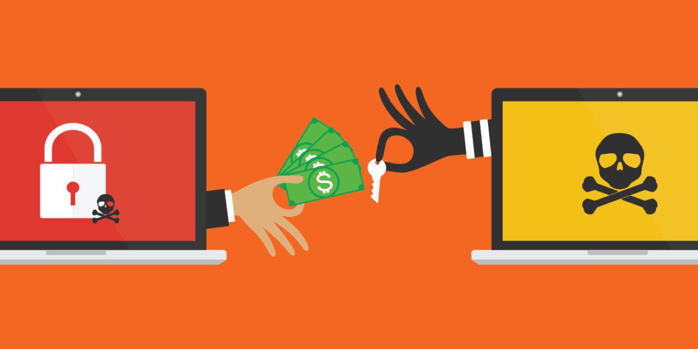

Malicious software that prevents users from accessing their systems or private files is known as ransomware. Typically, it encrypts or locks data, making it unreadable without special access. Then, before giving users back control of their data, attackers demand payment. The files could be destroyed forever or even made public if the ransom is not paid. Numerous people and businesses have been impacted by the sharp rise in ransomware outbreaks in recent years.
What Exactly is Ransomware?
Malicious malware known as ransomware prevents users from accessing data or systems unless they are paid. In order to prevent users from opening or using their files without a particular key, it encrypts data. In order to unlock the data and restore access, attackers frequently demand payment in digital currency. Additionally, new ransomware might steal data and threaten to make it public if the victim doesn't pay. These assaults are a major cybersecurity issue since they impact both individuals and corporations. A brief deadline is typically given to victims, which heightens stress and anxiety throughout the assault. Experts advise against paying since it may result in more attacks and does not ensure recovery.
How Does Ransomware Invade Your Device?
Ransomware can infiltrate devices in a variety of ways by exploiting human errors and system flaws. Phishing is a popular technique in which phony emails deceive recipients into opening malicious files or clicking on dangerous links. Weak remote access systems can also be used by attackers to get access to equipment and directly install malware. Unpatched systems and outdated software might lead to security flaws that facilitate infections. Ransomware can occasionally spread swiftly throughout a system using compromised USB devices or dangerous websites. Once it has access, the malware freezes files and may gather private information to further coerce victims. These methods highlight how crucial it is to remain vigilant and maintain system security at all times.
What Happens During an Attack?
Data is typically locked and kept for payment after a ransomware attack. The first stage is infection, which occurs when users unintentionally open malicious files or links, giving the malware access to the system. Once inside, the ransomware looks for crucial files and starts encrypting them to prevent access. In certain instances, the malware may also propagate to further linked devices in order to worsen the harm. The attacker shows a notification stating that the files are locked after the encryption is finished. This letter contains instructions on how to obtain a decryption key by paying a ransom, frequently using bitcoin. These actions demonstrate how easily ransomware may take over a machine and interfere with regular operations.
The Dangers of Paying the Ransom
Rather than resolving the issue, paying a ransom during a ransomware assault may increase hazards. Because it encourages cybercriminal activity, experts, including law enforcement agencies, they strongly advise against this move. The money paid could support criminal organizations and motivate attackers to keep going after additional victims. Attackers may also disseminate information about paying victims, making them candidates for additional attacks. Paying does not ensure that systems will function properly again or that files will be entirely restored. Some victims receive defective decryption tools, or technical problems cause them to recover only a portion of their data. Refusing to pay and concentrating on appropriate healing techniques is frequently the safer option due to these concerns.
Real-Life Ransomware Attacks
In 2017, hundreds of thousands of computers worldwide were impacted by the WannaCry assault, a significant ransomware epidemic. It swiftly expanded to over 150 nations, affecting big businesses and vital services like hospitals. System malfunctions caused some healthcare services to be interrupted, requiring patients to be rerouted. The attack quickly spread among linked devices by taking advantage of a security flaw in older systems. Many systems remained locked even after a researcher discovered a means to slow down the attack. In order to get their data back, victims had to either pay the ransom or discover alternative solutions. This incident demonstrated the potential danger of ransomware when systems are not adequately updated and secured.
Warning Signs of a Ransomware Attack
Before they completely impact a system, ransomware attacks frequently exhibit warning indicators, although these indicators might be easily missed. Unusual file changes, such as abrupt renaming, deletion, or frequent updates, are one common indicator. Strange file extensions can also be a sign that encryption is in place. When accounts access information or systems they don't typically use, that is another red flag. A potential attack may also be indicated by changes in backup systems, such as disabled schedules or missing copies. Additionally, there may be unexpected new administrator accounts or repeated unsuccessful login attempts. Early detection of these indicators can help save significant harm and enable quicker reaction to dangers.
How to Protect Your Files from Ransomware
Strong security procedures and meticulous planning are necessary to protect files from ransomware. Making regular backups and testing them to make sure data can be restored when necessary is a crucial step. Endpoint protection and email filters are examples of security systems that can stop threats before they get to a device. Network activity monitoring systems are also able to identify anomalous activity and alert users to potential threats. Understanding how to spot strange emails is crucial because phishing emails are often the first step in attacks. Securing mobile devices and staying away from dubious websites that can have dangerous content are two further forms of safety. Users can lower risks and better prevent critical files from being lost or locked by combining these techniques.
Conclusion
A dangerous kind of software called ransomware prevents users from accessing files and systems unless they are paid. It operates by encrypting data and making victims depend on attackers for a potential fix. These attacks have been more frequent in recent years and still have an impact on people and organizations all around the world. Prevention is crucial since ransomware can propagate via emails, unreliable systems, and risky online activity. Files are locked during an attack, and victims are under pressure to make quick payments. Paying the ransom, however, carries some risk and does not always ensure complete data recovery. To safeguard networks and stop further attacks, it is crucial to comprehend how ransomware operates and take the appropriate precautions.